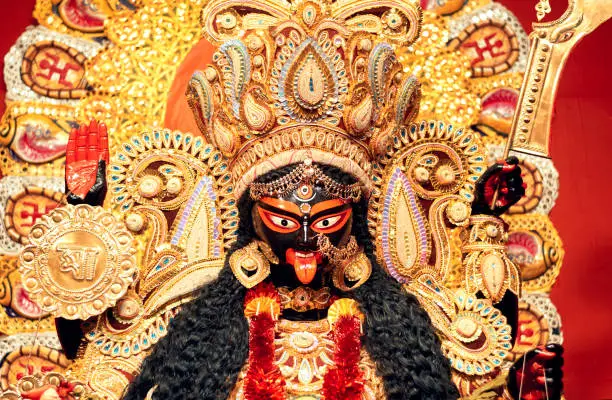

Kali Puja, a significant Hindu festival, pays homage to Goddess Kali, the embodiment of power, destruction
of evil, and maternal love. Celebrated predominantly in West Bengal and other parts of India, it typically
falls on the new moon day of the Kartik month (October-November).
The heart of Kali Puja lies in the creation of artistic pandals to house the fierce idol of Goddess Kali.
Adorned with multiple arms, a garland of skulls, and a triumphant posture, the idol represents the goddess's
formidable nature. The festival commences with elaborate rituals involving offerings, prayers, and aarti
(waving of lamps).
Kali Puja holds a unique blend of tradition and culture, intertwining Tantric practices with communal
celebrations. Tantric rituals aim to harness spiritual energies, fostering a sense of transformation and
protection. Alongside these rituals, cultural events like dances, music, and performances add color and
enthusiasm to the festivities.
People don new attire, visit pandals, and partake in community gatherings, strengthening bonds among fellow
devotees. The night skies are often illuminated with fireworks, symbolizing the victory of light over
darkness. The immersion of the idol in water signifies the cycle of existence and the impermanence of life.
Kali Puja transcends religious boundaries, inviting individuals from diverse backgrounds to join in the
celebration of feminine strength and the triumph of good. It embodies spirituality, culture, and unity,
encapsulating the essence of Goddess Kali's benevolent yet fierce nature.